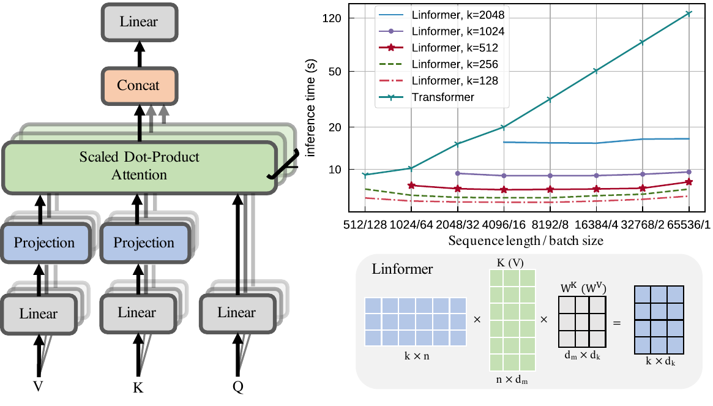
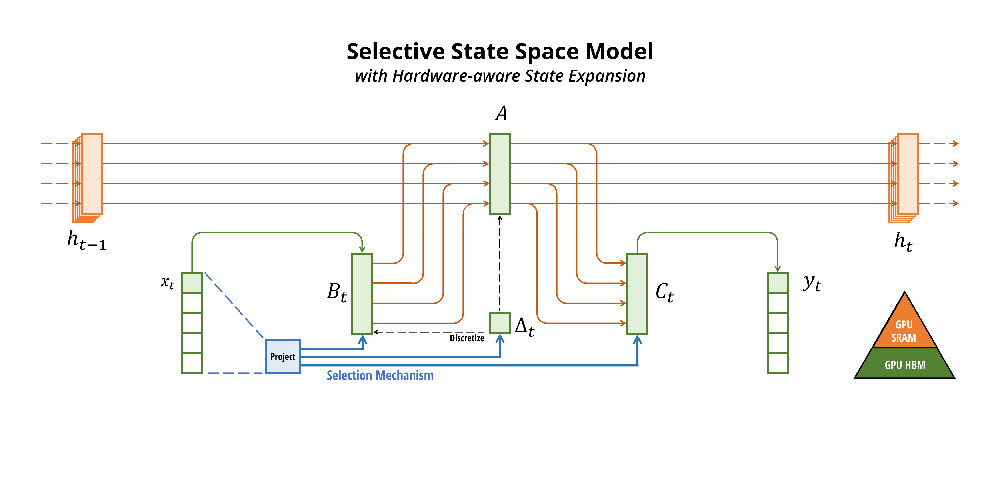
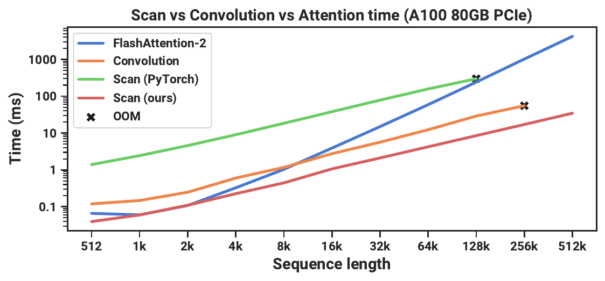
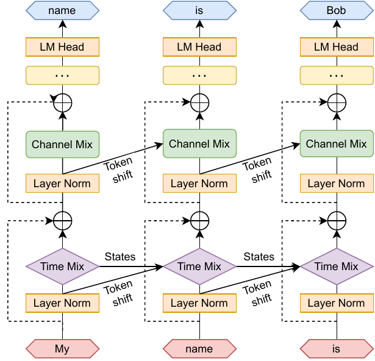

An interactive field guide
The Attention Zoo: every escape from the quadratic curse
Standard attention compares every token to every other token: $O(n^2)$ time and an $O(n)$ memory cache that grows with context. For six years the field has thrown everything at that wall — skip most of the comparisons, factorize the matrix, swap softmax for a kernel, or abandon attention for a recurrent state entirely. 3Blue1Brown's recent video flashed a list of names — Sparse, Blockwise, Linformer, Reformer, Ring, Longformer, Adaptive Span — and that is only the opening. This guide organizes the whole zoo into six families, gives a quick tutorial on each, walks the state-space revival (Mamba, RWKV, RetNet) and the newest work from Chinese labs (DeepSeek's NSA, Kimi's MoBA, MiniMax's lightning attention), and then asks the question the hype usually skips: which of these are actually used in production today — and which quietly didn't pan out?
Recall the core operation. For queries $\vQ$, keys $\vK$, values $\vV$ (each $n \times d$), attention is:
$$ \mathrm{Attn}(\vQ,\vK,\vV) = \softmax\!\Big(\tfrac{\vQ\vK^\top}{\sqrt{d}}\Big)\vV $$
The trouble is $\vQ\vK^\top$: an $n \times n$ matrix. Every one of the $n$ queries scores against all $n$ keys, so compute is $O(n^2 d)$ and the attention matrix itself is $O(n^2)$ memory. Double the context and the cost quadruples. At inference there is a second tax: autoregressive decoding re-reads the entire key-value cache every step, and that cache grows linearly with the sequence — a memory-bandwidth bottleneck, not a compute one.
Every method in this guide attacks one or both of those costs, and they fall into a surprisingly small number of strategies. The animation below is the whole taxonomy in one frame: start from the dense matrix, then watch the four mathematical escape routes — skip cells (sparse), factorize the matrix (low-rank), reorder the products (linear/kernel), or collapse the past into a fixed-size state (recurrence). A fifth and sixth family don't change the asymptotics at all — they change how the work maps onto hardware, or they mix several escapes together.
The four mathematical escapes from $O(n^2)$. Sparse attention skips most cells; low-rank factorizes the matrix into thin factors; linear/kernel attention reorders $\vQ(\vK^\top\vV)$ to avoid ever forming the $n\times n$ matrix; recurrent/SSM models compress the past into a constant-size state.
The map: six families of escape
Before the details, here is the organizing scheme. Almost every "efficient attention" or "attention alternative" you will ever read about lands in one of these six buckets — and the most successful modern systems combine two or three. Explore the families in the widget; click any method for a one-paragraph tutorial.
1 · Sparse attention — skip most of the cells
The softmax attention matrix is overwhelmingly sparse in practice: a few keys hold almost all the weight. So compute only the cells that matter. Fixed patterns hard-wire which cells: sliding windows (local), strided/dilated reach, and a handful of global tokens. The 3b1b list's Longformer (window + global), Blockwise Attention, and Adaptive Attention Span (each head learns how far back to look) live here, alongside Sparse Transformers and BigBird. Learned patterns pick cells from the data — Reformer hashes similar queries and keys into buckets (LSH). And the modern native-sparse methods (DeepSeek's NSA, Kimi's MoBA) make blockwise selection trainable end-to-end and aligned to the GPU.
Sparse attention keeps the exact attention machinery, just on a subset — so it preserves attention's precise recall, which is its big advantage over the more radical families below. The cost is the bookkeeping of which cells to keep, and making that bookkeeping hardware-friendly.
2 · Low-rank & linear/kernel attention — never form the matrix
A different observation: the $n \times n$ attention matrix is often approximately low-rank. Linformer exploits this directly — it projects the keys and values down from length $n$ to a small fixed length $k$ with learned projections, so the matrix is $n \times k$ and cost is $O(nk) \approx O(n)$. Simple and fast, but the fixed projection assumes a maximum sequence length and is awkward for autoregressive (causal) decoding.

Kernel / linear attention is the more general idea, and the most elegant trick in the zoo. Softmax forces you to compute $\vQ\vK^\top$ first. But if you replace the softmax similarity with a kernel feature map $\phi$, so that $\mathrm{sim}(\vq,\vk) = \phi(\vq)^\top\phi(\vk)$, then attention becomes a plain product — and matrix multiplication is associative:
$$ \underbrace{\big(\phi(\vQ)\,\phi(\vK)^\top\big)\vV}_{O(n^2 d)} \;=\; \underbrace{\phi(\vQ)\,\big(\phi(\vK)^\top\vV\big)}_{O(n d^2)} $$
Compute $\phi(\vK)^\top\vV$ first — a $d \times d$ matrix — and the $n^2$ term vanishes. Performer picks $\phi$ as random features that provably approximate softmax (FAVOR+); the original Linear Transformers use a simple feature map and, crucially, observe that this form is a recurrence: the $d\times d$ state $\phi(\vK)^\top\vV$ can be updated one token at a time, giving $O(1)$-memory decoding. That observation is the bridge to the next family. The catch: a $d\times d$ state is a fixed-size summary of the entire past, so linear attention trades exact recall for speed — it can forget specific tokens that a full attention lookup would have found.
3 · Recurrence reborn — state-space models & linear RNNs
If a fixed-size state can summarize the past (as linear attention showed), why not design that recurrence directly? This is the most exciting line of the last two years: a revival of RNNs that fixes their two historical flaws — they were slow to train (inherently sequential) and forgot long-range information.
State-space models: S4 → Mamba
A state-space model evolves a hidden state $\vh_t$ through a linear recurrence and reads out an output:
$$ \vh_t = \mathbf{A}\,\vh_{t-1} + \mathbf{B}\,\vx_t, \qquad y_t = \mathbf{C}\,\vh_t $$
Because the recurrence is linear, it can be unrolled as a global convolution and trained in parallel across the whole sequence (S4's trick) — fast like a Transformer — yet run as a constant-state recurrence at inference — cheap like an RNN. Mamba (Gu & Dao, 2023) made the SSM parameters input-dependent (the "selective" S6 mechanism), so the model can choose what to remember and what to ignore based on content — the thing fixed SSMs couldn't do — and paired it with a hardware-aware parallel scan. The result matches or beats Transformers of the same size on language, with $O(n)$ training and $O(1)$-per-token generation.


Linear RNNs: RWKV and RetNet
RWKV ("Reinventing RNNs for the Transformer Era," Bo Peng and an open community, 2023) reaches the same destination from the RNN side: a time-mixing "WKV" operator that behaves like a continuously-decaying attention but can be written as a recurrence, so it trains in parallel like a Transformer and runs with constant memory like an RNN. It has iterated rapidly through versions 4, 5/6 (Eagle/Finch), and 7 (Goose), is fully open, strongly multilingual, and popular for edge and embedded deployment. RetNet (Microsoft, 2023) offers a "retention" mechanism with three equivalent forms — parallel for training, recurrent for decoding, and chunkwise for long sequences — chasing the same "train parallel, infer recurrent" sweet spot.

All three share one bet and one risk. The bet: a well-designed fixed-size state is enough for most of what language needs, and constant-memory decoding is worth a lot. The risk: a fixed state fundamentally cannot store arbitrary detail, so these models are weaker at tasks needing exact recall from deep in the context (copying, precise retrieval) — exactly where attention shines. Which is why the winning systems increasingly combine them.
4 · Hardware & distributed — same math, better mapping
Not every escape changes the big-O. Some keep exact attention and just run it dramatically better on real machines — and these are, in practice, the most universally adopted of all.
FlashAttention computes exact attention without ever materializing the $n\times n$ matrix, by tiling the computation to keep blocks in fast on-chip SRAM. It doesn't reduce FLOPs; it removes the memory bottleneck, and it is now the default in essentially every Transformer. Blockwise Attention (from the 3b1b list) is the same tiling principle. Ring Attention goes distributed: split a very long sequence across many GPUs arranged in a ring, and pass key-value blocks around the ring while overlapping communication with computation — letting context length scale with the number of devices, toward millions of tokens. These don't beat the curse so much as pay it across more hardware, which is how frontier labs reach giant context windows.
5 · The new wave — and the Chinese labs
The 2024–2025 frontier is defined less by a single new mechanism than by hybrids and by making efficient attention work at production scale — much of it from Chinese labs pushing long context hard.
- DeepSeek — NSA (Native Sparse Attention). Trainable blockwise sparse attention (compression + selection + sliding window), hardware-aligned to GQA, 11.6× faster decode at 64k and beating full attention on quality. The most convincing recent evidence that sparse-from-scratch works. See the dedicated post.
- Moonshot / Kimi — MoBA (Mixture of Block Attention). Routes each query to a few key blocks with an MoE-style top-k gate, switching between full and sparse seamlessly. Deployed in the Kimi long-context assistant — sparse attention in a real product.
- MiniMax — lightning attention (MiniMax-01). A linear-attention variant scaled to a 456B-parameter MoE with a 4-million-token context, hybridized with periodic full-attention layers. The boldest bet that linear attention can anchor a frontier model — by not going all-in on it.
- RWKV. Community/open, with strong Chinese-language support and an active foundation; the leading pure-recurrent open alternative.
- Hybrids elsewhere. AI21's Jamba interleaves Mamba, attention, and MoE; DeepMind's Griffin/Hawk mixes gated linear recurrence with local attention; NVIDIA, Codestral Mamba, Zamba, and Samba all ship Mamba-attention hybrids. The pattern is consistent: a few full-attention layers for exact recall, cheap recurrence or sparsity for the rest.
Comparing the families
Each family makes a different trade among five things you actually care about: training cost, decoding memory, parallelism, recall (can it find an exact token deep in the context?), and engineering complexity. The widget lets you sort and compare; the table spells out the headline pros and cons.
| Family | Key idea | Pros | Cons |
|---|---|---|---|
| Full attention (+ FlashAttention) |
compare all pairs, exactly | best quality & exact recall; simple; FlashAttention makes it IO-optimal; universal tooling | $O(n^2)$ compute, $O(n)$ KV cache — the wall |
| Sparse | skip most cells | keeps exact attention on a subset → strong recall; native versions match full attention | selection bookkeeping; must be block/GPU-friendly to pay off; best when trained in |
| Low-rank / linear | factorize or reorder products | true $O(n)$; constant-state decode; elegant | fixed-size state → weak exact recall; softmax is hard to approximate well |
| SSM / linear-RNN (Mamba, RWKV, RetNet) |
learned recurrent state | $O(n)$ train (parallel scan), $O(1)$ decode; excellent on long, smooth signals; tiny KV | fixed state limits precise long-range lookup; newer tooling; weaker in-context copying |
| Hardware / distributed (Flash, Ring, Blockwise) |
same math, better IO | exact; huge real speedups; Ring scales context with devices | doesn't change asymptotics; Ring needs many GPUs & fast interconnect |
| Hybrid (Jamba, MiniMax-01, Griffin) |
mix attention + recurrence/sparse | recall of attention + cheap bulk from recurrence/sparsity; best practical long-context | more moving parts; ratios need tuning; harder to reason about |
How useful, really? Adoption in 2025
Here is the honest part the survey lists usually skip. Despite hundreds of papers, the frontier of general-purpose LLMs — GPT, Claude, Gemini, Llama, Qwen, DeepSeek-V3 — still runs on full attention, made practical by FlashAttention, grouped-query attention, and RoPE-based context extension. The exotic alternatives have mostly not displaced it head-on. But that flat summary hides a more interesting reality, which the widget below visualizes: research interest and production deployment are very different rankings.
Reading the landscape honestly:
- Universally adopted: FlashAttention and GQA. Nearly every modern Transformer uses them. Not a way to escape $O(n^2)$ — a way to survive it.
- Real and growing: native sparse attention (NSA in DeepSeek, MoBA in Kimi) for long context, and Mamba-attention hybrids (Jamba, MiniMax-01, NVIDIA/Codestral) where a few attention layers keep recall while recurrence carries the bulk. This is where the alternatives are actually shipping.
- Strong in niches: pure SSMs/Mamba in genomics, audio, and on-device; RWKV in open and edge deployments. Real users, not frontier-scale chat.
- Mostly historical: Linformer, Performer, Reformer, and the 2020-era fixed-pattern encoders. Hugely influential as ideas, little direct use in today's frontier models — the long-context problem moved to decoders, where their assumptions (non-causal, fixed length) don't fit.
The throughline: nothing has killed attention. What works is keeping attention for the exact-recall it uniquely provides, and offloading the cheap bulk to sparsity or recurrence — plus relentless hardware co-design. The "attention alternative" framing turned out to be less accurate than "attention budget management."
The bottom line
The quadratic curse has exactly four mathematical escapes — skip, factorize, reorder, or recur — plus two engineering moves: map it better onto hardware, or mix several escapes. Everything from Longformer to Mamba to NSA is one of those six ideas, dressed for a particular regime. The decade-long experiment has a clear verdict so far: the radical replacements (pure linear, pure SSM) are brilliant and useful but give up the exact recall that makes attention special, so the production winners are hybrids and hardware-aware exact/sparse attention, not wholesale replacements.
Open questions
- The recall gap. Can a fixed-size state ever match attention's precise long-range lookup, or is some attention always necessary?
- The right hybrid ratio. How many attention layers, where, and how much sparsity — currently tuned by hand.
- Training-native everything. NSA showed sparse-from-scratch beats bolt-on. The same likely holds for hybrids; co-designing the whole stack is open.
- Beyond a million tokens. Ring attention scales with hardware; sparse and recurrent scale with cleverness. The cheapest path to 10M+ context is unsettled.
The mental model to keep
Attention is an exact lookup over the whole past; it is expensive precisely because it is exact and complete. Every alternative is a bet that you don't need all of that all the time — so spend the full lookup only where recall matters, and use a cheaper approximation (a sparse subset, a low-rank sketch, or a running state) everywhere else. Seen that way, the zoo isn't a list of rival species. It's a menu of how much to pay for memory — and the best systems order from several dishes at once.